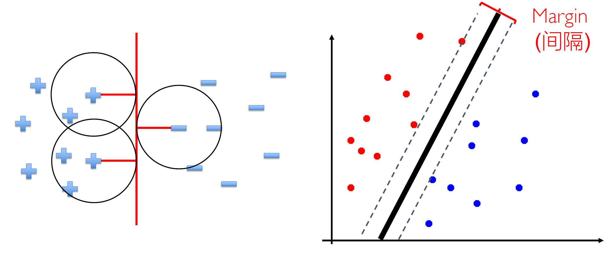
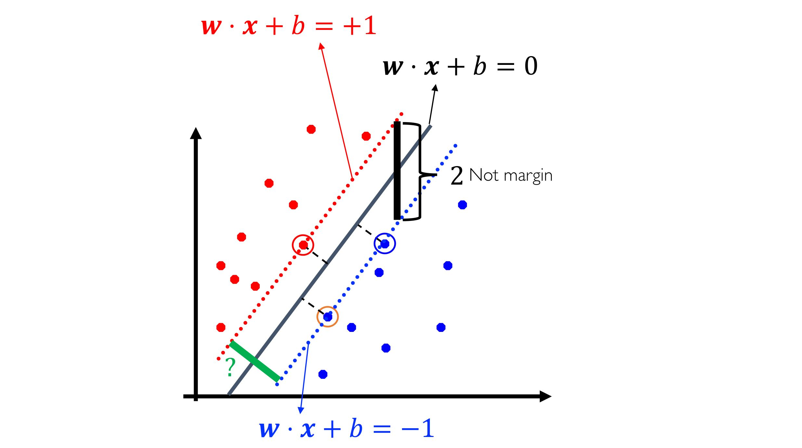
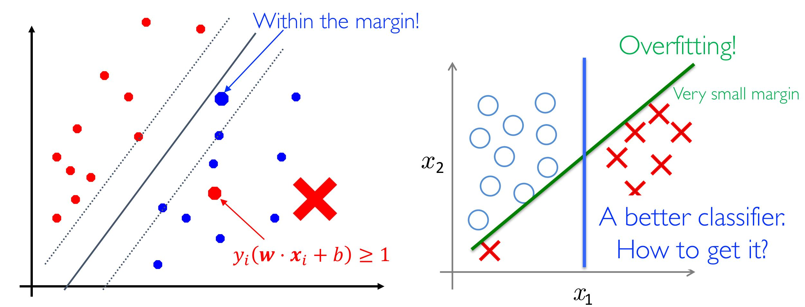
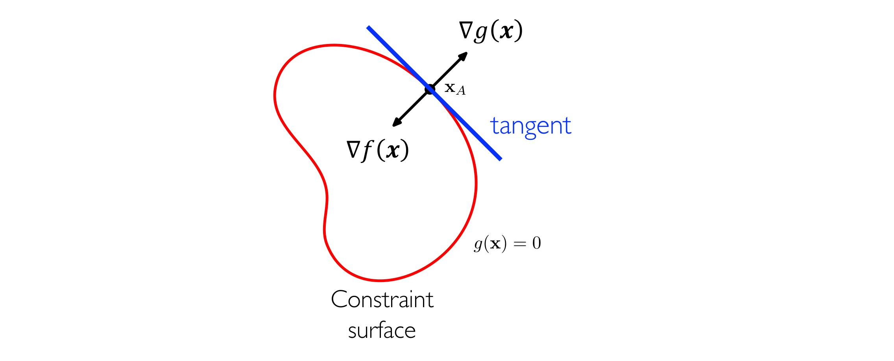
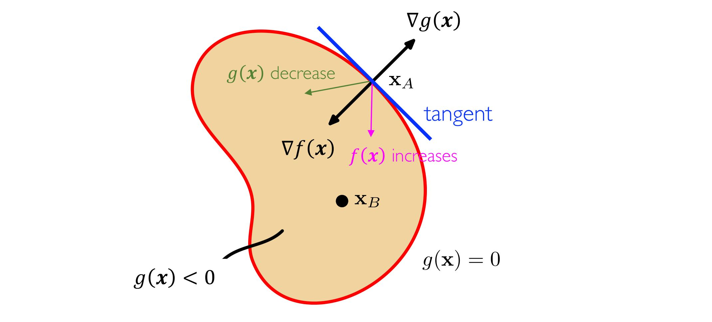
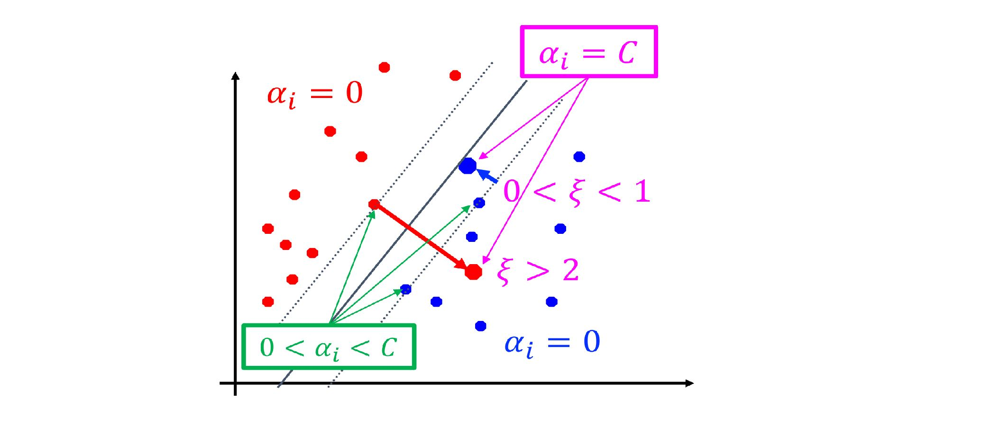
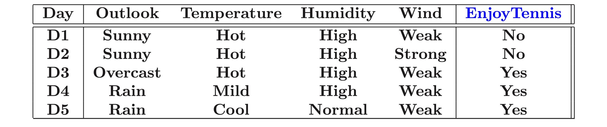
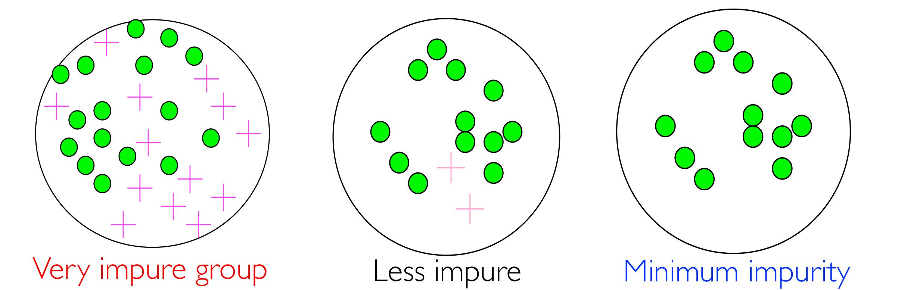
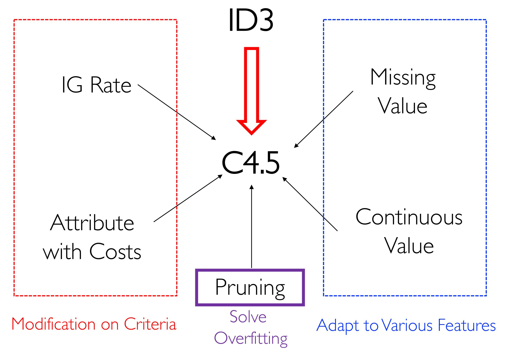

统计学习¶
统计学习¶
监督学习¶
给定可能的输入集合 X，输出集合 Y，一个未知的映射 f: X \rightarrow Y，以及可能的函数空间 H = \{h | h: X \rightarrow Y\}。
输入训练集合 \{(x^{(i)}, y^{(i)}) \}，希望输出一个函数 f 的估计 h \in H 使得 h \approx f。
SVM¶
SVM¶
硬间隔 SVM¶
考虑几何视角。
当样本中的噪声逐渐增大时，只有一个线性分类器剩余，该线性分类器需要能够满足：
- 正确分类样本。
- 对于样本有最大的间距。

此时，支持向量机的想法就出现了。求解支持向量机等价于优化问题：

点 \boldsymbol x_0 到超平面 \boldsymbol w \cdot \boldsymbol x + b = 0 的距离为：
由于最近的点处在超平面 \boldsymbol w \cdot \boldsymbol x_0 + b = \pm 1 上，则：
由于表达式非凸，因此将其转化为更易优化的凸函数形式，硬间隔 SVM 于是等价于凸优化问题：
软间隔 SVM¶
硬间隔 SVM 仅适用于线性可分的问题，在实际中应用极少。即使可以使用，也容易出现过拟合问题。

容许部分点分类错误，引入松弛变量 \xi_i。
约束过多，利用 Lagrange 乘子法整理出等价的方程。
多类别 SVM¶
对于多类别的分类问题，SVM 可以通过一下几种方式解决：
- 一对多：某类为正例，其余为负例。分类时将未知样本分给具有最大分类函数值的一类。
- 一对一：任意两类构造一个 SVM，分类时采取投票的方式决定类别。
- 层次法：所有类先分成两类，再依次类推。
优化¶
凸优化问题¶
对于通用优化问题：
该问题称为凸优化问题如果 \mathcal X 是一个凸集且 f(x) 是凸函数。
KKT 条件¶
在凸优化问题中，分别考虑等式约束和不等式约束。
对于等式约束：
- 对于任意满足 g(\boldsymbol x) = 0 的 \boldsymbol x，\nabla_{\boldsymbol x} g(\boldsymbol x) 一定垂直于表面切线。
否则沿梯度在切线方向的投影一定能走到不同的值。
- 对于约束表面上最优的 \boldsymbol x^*，\nabla_{\boldsymbol x} f(\boldsymbol x) 一定垂直于表面切线。
否则沿梯度在切线方向的投影一定能走到不同的值。

因此有：
对于此问题的 Lagrange 方程：
且有：
得到 d + 1 组方程可以用于确定 \boldsymbol x \in \mathbb R^d 和 \lambda，解为 L(\boldsymbol x, \lambda) 的驻点。
对于不等式约束：
-
如果最优解在区域内（g(\boldsymbol x) < 0），则可直接求解 \nabla_{\boldsymbol x} f = 0，此时 (\boldsymbol x^*, \lambda = 0) 是 L(\boldsymbol x, \lambda) 的驻点。
-
如果最优解在边界上（g(\boldsymbol x) = 0），f(\boldsymbol x) 最小当且仅当该点的梯度指向区域内，此时有
$$ \nabla f + \lambda \nabla g = 0, \lambda > 0 $$

综合以上推导，可以得到 KKT 条件。
单个约束的 KKT 条件：
对于有约束的凸优化问题可以转化为对于 Lagrange 方程的求解：
其中 \boldsymbol x, \lambda 需要满足以下的 KKT 条件。
多个约束的 KKT 条件：
当有多个约束时：
得到 Lagrange 方程
此时的 KKT 条件为
此时，存在最优的 \boldsymbol x^* 当且仅当存在 \boldsymbol \lambda, \boldsymbol \mu 满足 KKT 条件。
对偶问题 Lagrange 方法¶
原问题：
其 Lagrange 对偶问题为：
\Gamma(\boldsymbol \lambda, \boldsymbol \mu) 为 f(\boldsymbol x^*) 的下界，且是一个凹函数。
对于任意的点 \boldsymbol x'，有
\inf \limits_{\boldsymbol x} L(\boldsymbol x, \boldsymbol \lambda, \boldsymbol \mu) \le f(\boldsymbol x') + \sum \limits_{j = 1}^J \lambda_j g_j(\boldsymbol x') + \sum \limits_{k = 1}^K \mu_k h_k(\boldsymbol x') \le f(\boldsymbol x')在凸优化问题中，有
\max \limits_{\boldsymbol \lambda, \boldsymbol \mu} \Gamma(\lambda, \mu) = f(\boldsymbol x^*)注：将原问题转化为对偶问题不一定是更容易。
事实上，如果从隐函数 \nabla_{\boldsymbol x} = 0 计算得到的 \boldsymbol x = \psi(\boldsymbol \lambda, \boldsymbol \mu) 没有解析形式，对偶问题是更为困难的。
注：
- 对偶问题中求解 max-min 要比求解 min-max 问题更加容易（后者容易出现正无穷的情况）。
- 对偶问题的约束是对于常量的约束，比原问题中对于函数的约束更为简单。
对偶问题求解 SVM¶
将 SVM 对应的凸优化问题转换为对偶问题进行求解。
原问题为：
写成 Lagrange 方程的形式（共 2n 个约束）：
对 L 求偏导，将参数写成 Lagrange 算子的形式：
整理可以得到对偶问题（2n + 1 个约束）：
此处可以通过二次线性规划求解（较慢），也可以使用特殊方法 SMO（Sequential Minimal Optimization）求解。
在解出 \boldsymbol \alpha 后，可以求解 \boldsymbol w = \sum \limits_{i = 1}^n \alpha_i y_i \boldsymbol x_i。
在解出 \boldsymbol w 后，选取 \alpha_j > 0 的对应 j，计算得到 b = y_j - \sum \limits_{i = 1}^n \alpha_i y_i (\boldsymbol x_i \cdot \boldsymbol x_j)。
支持向量
\alpha_i > 0 的点 \boldsymbol x_i，对于 \boldsymbol w 有贡献。（困难的样本、稀疏解）

对于 \alpha_i > 0，可分类讨论得到：
- 若 \alpha_i < C，则 \xi_i = 0，x_i 在间隔边界上。
- 若 \alpha_i = C：
- 0 < \xi_i < 1，则分类正确，x_i 在间隔边界和超平面之间。
- \xi_i = 1，则 x_i 在超平面上。
- \xi_i > 1，则 x_i 在误分的一侧。
核函数¶
对于非线性可分的支持向量机，可以通过引入基函数的方式将输入空间映射到特征空间，并在特征空间中进行线性划分：
为了避免特征空间维度过高导致的计算困难（事实上，有的特征空间可以是无穷维的），引入核函数。
此时，用 SVM 解出的超平面为：
定理（Mercer）：映射 k(\cdot, \cdot) 是一个 \mathcal X \times \mathcal X 上的对称函数，k(\cdot, \cdot) 是核函数的充要条件为，对于任意的输入 (\boldsymbol x_1, \dots, \boldsymbol x_m)，都有
是半正定矩阵。
常见核函数有：
| 核函数 | 表达式 |
|---|---|
| 多项式 | k(\boldsymbol x_1, \boldsymbol x_2) = (\boldsymbol x_1 \cdot \boldsymbol x_2 + 1)^d |
| 高斯（RBF） | k(\boldsymbol x_1, \boldsymbol x_2) = \exp(-\frac{\lVert \boldsymbol x_1 - \boldsymbol x_2 \rVert^2}{2 \sigma^2}) |
文本分类问题¶
文本的向量空间模型¶
将文本表达为一个向量
其中 w_{ij} 表示词项 i 在文档 j 中的权重。
TF-IDF¶
词项频率 \text{tf}_{ij} 为第 i 个词项在第 j 个文档中的词频。
文档频率 \text{df}_{ij} 为出现词项 i 的文档比例。
逆文档频率 \text{idf}_{ij} = \log \frac 1 {\text{df}_{ij}}。
令 w_{ij} = \text{tf}_{ij} \times \text{idf}_{ij}，可以得到文档的向量空间模型。利用 SVM 可对其进行分类。
决策树¶
在分类问题中，某些问题存在“异质数据”不适合被普通的线性模型所描述。

同时，我们也希望通过适当的处理为这类问题的模型增加可解释性。
决策树可用来处理这类异质数据，并且与特征工程相结合。
ID3¶
Intuition：我们希望划分出来的每个节点都尽量“纯净”，因此我们希望通过描述节点的“纯度”来对划分进行衡量。

信息熵¶
使用信息熵来对一个节点“纯度“进行衡量，有：
信息增益¶
对于一次划分，我们使用信息增益来进行衡量。
注：更大的熵，更少的信息量。因此这一熵增的过程被称为信息增益。
ID3¶
创建根节点
// 终止条件
- 如果数据集合全都为正，则标记为正，退出
- 如果数据集合全都为负，则标记为负，退出
- 如果特征集合为空，标记为最多的标记，退出
// 主循环
A <- 利用 IG 计算出的最优划分特征
for vi <- A 的取值:
添加新的子节点对应 A = vi 的情况
令 Ei 为对应的数据集合
- 如果 Ei 为空，则标记为父节点中最多的标记，退出
- 否则添加一个新的节点，递归运行算法
C4.5¶
ID3 中的信息增益倾向于选择分支比较多的属性。
在最极端的情景中，每个分支只有一个数据点会获得较好的信息增益。

信息增益比¶
为了对多分支情况加入惩罚项，引入信息增益比：
C4.5 中，多分支的比例通过本征值 \text{IV} 进行衡量：
当集合 \mathcal D 被特征 f 划分后的 \text{IV} 如上。
带权重的特征¶
在实际应用中，不同的特征可能拥有不同的现实特征。因此可以将权重引入决策过程中：
\text{Cost} 的确定需要与特征工程相结合。
缺失值¶
对于数据中可能的缺失值，决策树提供了一种天然的解决方案。由于每层决策都是依次考虑每个特征，因此如果单个特征缺失的数据在合理的范围内，可以有效地解决数据缺失的问题。
- 在计算 \text{IG} 的过程中：
- 计算缺失数据的比例 \rho = \frac{\lvert \overline {\mathcal D} \rvert}{\lvert \mathcal D \rvert}。
- 在 \mathcal D \backslash \overline {\mathcal D} 上计算信息增益 \text{IG}。
- 实际的 \text{IG} = (1 - \rho) \text{IG}。
- 在划分的过程中：依据权重将缺失数据的集合划分到每一类中。
连续值¶
如果数据集中存在连续值，则可以将所有数值排序后枚举分割点。
如果 x_{1j}, \dots, x_{nj} 是第 j 个特征中 n 个数据点，一般地，我们采用的分割点为：
信息增益比与信息增益结合¶
信息增益比倾向于选择分割不均匀的特征。
因此一种可行的解决方案为，先选择 n 个信息增益较大的特征，再从这 n 个中挑选信息增益比最大的特征。
过拟合问题¶
决策树中容易出现过拟合的情况，因此可以采取剪枝的方式进行修正。
预剪枝¶
在训练过程中，每次在验证集上计算划分能否提升准确率，如果不能则进行剪枝。
后剪枝¶
在训练完成后进行剪枝，从叶子节点开始向上，如果划分不能提高准确率则剪枝。
正则化¶
对于决策树定义损失函数并加上基于树复杂度的正则项：
其中 T 为所有叶子节点的集合，N_{tk} 是第 k 类进入叶子节点 t 的样本个数。
决策树的损失函数即为所有叶子节点的经验熵之和；正则项为树复杂度（叶子节点的数量）。
可以利用此损失函数进行剪枝：递归地考虑每个叶子结点，如果 C_{\alpha}(T_B) \le C_{\alpha} (T_A)，则剪去叶子节点 A 而将父亲节点 B 作为新的叶子。